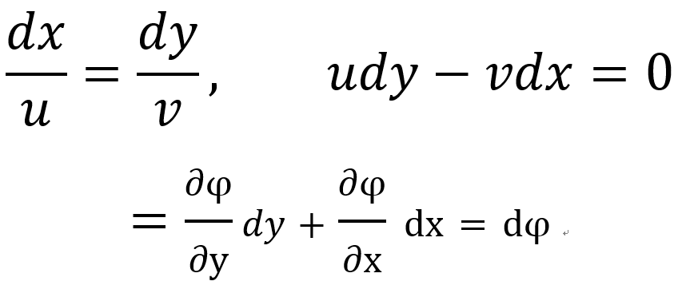

[Fluid mechanics] Ch 4. The stream function
오늘 알아볼 것은
Stream funciton이 무엇일까??
자 계속해서 언급하지만,
과학자들이 정의한 대에는 다 이유가 있습니다.
대부분의 이유는 편할려고 쉽게살려고.
일단 Stream function의 정의부터 살펴보죠!
일단 x,y 2-Dimensional 좌표평면에서 유체가 V = (u,v) 방향으로 흐른다고 가정하자.
그렇다면, 다음과 같이 정의된 함수가 바로 Stream function
![[Fluid mechanics] Ch 4. The stream function](./images/img-001.png)
이렇게 정의하면 뭐가 편리할까????
![[Fluid mechanics] Ch 4. The stream function](./images/img-002.png)
즉, Stream function은 그 자체로 연속방정식을 만족하는 함수이다.
따라서, Stream function으로 변형된 differential form을 다른 식에 대입하면
그 자체가 연속방정식을 만족한다는 뜻!!!!
원문에서는 정확히:
Stream function is a clever device that allows us to satisfy the continuity eq
and then solve the momentum eq directly for the single variable.
뿐만아니라,
Stream line: 유체의 속도 gradient를 이은 직선.
을 나타낼 수 있다.

따라서, Stream line을 따라서는 Stream function 이 일정하다는 것을 알 수 있다.
한발 더 가면, 밑 Streamline 그림을 봐보자.
![[Fluid mechanics] Ch 4. The stream function](./images/img-004.png)
우리는 Flowrate 변화량을 Stream function으로 나타낼 수 있다.
![[Fluid mechanics] Ch 4. The stream function](./images/img-005.png)
따라서, 우리는 Flow rate의 변화량을 Stream function의 변화량으로 구할 수 있다.
![[Fluid mechanics] Ch 4. The stream function](./images/img-006.png)